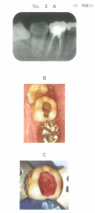
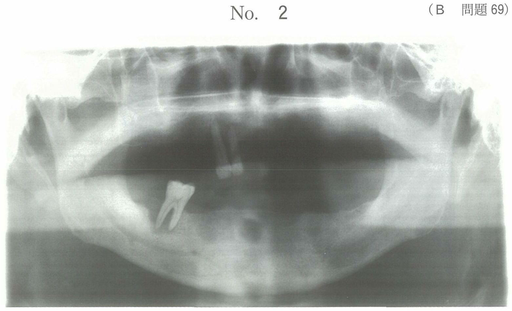

歯内療法学 / 歯髄処置
覆髄法
覆髄法の分類
| 分類 |
露髄 |
目的 |
成功率 |
| 間接覆髄法 |
なし |
修復象牙質形成促進 |
95%以上 |
| 直接覆髄法 |
あり |
デンチンブリッジ形成 |
— |
| 暫間的間接覆髄法（IPC） |
なし |
感染象牙質の再石灰化 |
— |
間接覆髄法
適応症
使用薬剤
- 酸化亜鉛ユージノール
- 水酸化カルシウム：修復象牙質の形成を促進
目的・効果
- 修復象牙質（第二象牙質）の形成
- 残存歯質の再石灰化
直接覆髄法
適応症
- 偶発的な小露髄（直径2mm未満）
- 歯髄に感染が生じていない症例
- 臨床的健康歯髄、歯髄充血
- 若年者の歯、根未完成歯が望ましい
禁忌症
- 急性歯髄炎、慢性歯髄炎
- 露髄面が大きい（直径2mm以上）
- 高齢者の歯
- 軟化象牙質除去中の露髄（感染の可能性）
使用薬剤
直接覆髄薬（頻出）
- MTAセメント：近年の第一選択、硬組織形成作用、良好な封鎖性・生体適合性
- 水酸化カルシウム：従来から使用、デンチンブリッジ形成促進
露髄面の洗浄・消毒
- 滅菌生理食塩液
- 次亜塩素酸ナトリウム溶液（3〜10%）
- 3%過酸化水素水
※ リン酸水溶液、EDTA水溶液は使用しない
治癒機転
水酸化カルシウム・MTAの作用により露髄部にデンチンブリッジが形成され、露髄部が閉鎖される。
暫間的間接覆髄法（IPC）
IPCの特徴（頻出）
- 一層の軟化象牙質を残存させる
- 目的：感染象牙質の再石灰化
再石灰化に有効な薬剤
関連する処置
- 非侵襲的修復技法（ART）：同様に感染象牙質の再石灰化を目的とする
水酸化カルシウムの使用範囲
| 処置 |
使用 |
| 間接覆髄法 |
○ |
| 直接覆髄法 |
○ |
| 生活断髄法 |
○ |
| アペキシフィケーション |
○ |
| 歯髄鎮痛消炎療法 |
× |
過去問
109C93
直接覆髄に用いるのはどれか。1つ選べ。
a EBAセメント
b MTAセメント
c グラスアイオノマーセメント
d 酸化亜鉛ユージノールセメント
e タンニン・フッ化物合剤配合ポリカルボキシレートセメント
正解：b
【解説】MTAセメントは硬組織形成作用、良好な封鎖性・生体適合性を有し、直接覆髄薬として近年広く使用されている。水酸化カルシウムも使用されるが、選択肢にないためMTAが正解。
116C62
直接覆髄で露髄面に用いるのはどれか。2つ選べ。
a リン酸水溶液
b 滅菌生理食塩液
c ポリカルボン酸水溶液
d 次亜塩素酸ナトリウム溶液
e エチレンジアミン四酢酸〈EDTA〉水溶液
正解：b, d
【解説】直接覆髄時の露髄面洗浄には滅菌生理食塩液と次亜塩素酸ナトリウム溶液を使用する。リン酸やEDTAは歯質を脱灰するため露髄面には使用しない。
109A120
暫間的間接覆髄法の臨床的特徴はどれか。1つ選べ。
a 歯髄の血流を回復できる。
b 非感染性露髄は適応となる。
c 一層の軟化象牙質を残存させる。
d ホルマリングアヤコールを用いる。
e 幼若永久歯より乳歯で有効である。
正解：c
【解説】暫間的間接覆髄法（IPC）は、深在性齲蝕において一層の軟化象牙質を意図的に残存させ、その再石灰化を期待する方法である。露髄は適応外。
103C110
水酸化カルシウムが使用されるのはどれか。すべて選べ。
a 歯髄鎮痛消炎療法
b 間接覆髄法
c 直接覆髄法
d 生活断髄法
e アペキシフィケーション法
正解：b, c, d, e
【解説】水酸化カルシウムは間接覆髄法、直接覆髄法、生活断髄法、アペキシフィケーション法で使用される。歯髄鎮痛消炎療法には酸化亜鉛ユージノールやフェノール製剤が使用され、水酸化カルシウムは使用されない。
102C3
26歳の女性。下顎右側第二大臼歯の冷水痛を主訴として来院した。半年前に修復物が脱落したが放置していた。1か月前から冷水に一過性の痛みを感じるようになったという。初診時の口腔内写真（別冊No.3A）と処置時の口腔内写真（別冊No.3B）を別に示す。
この処置で期待できるのはどれか。2つ選べ。


a 歯根の成長
b 歯髄の乾屍
c 歯髄の鎮痛消炎
d 第二象牙質の形成
e 残存歯質の再石灰化
正解：d, e
【解説】間接覆髄法で期待できる効果は、修復象牙質（第二象牙質）の形成と残存歯質の再石灰化である。歯根の成長はアペキソゲネーシス、歯髄の乾屍は失活剤使用時の効果。